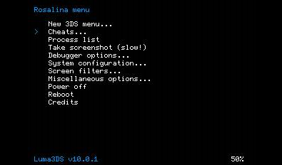
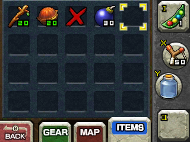

Checkpoint Cheat Guide
Here's a short guide on how to use Checkpoint cheats. Credits to @Krieg#1473 for images and base text.
Sharkive used to be used for cheats. As of the time of writing, Checkpoint can now be used for cheats too, and Sharkive has been deprecated, so Checkpoint should be used.
Required:
Luma 9.1 or above and the latest release of Checkpoint, which can be found here if you need it.
Obtaining Cheats
1. Open Checkpoint. The icon is the black flag on your homescreen.
2. Select the game you want to cheat on
3. Press "Cheats" under Backup and Restore

4. When you see the list of cheats, press Y to save all of them, then press B

5. When prompted to store the cheat save file, press A

You have acquired some cheats, now let's use them in game!
Using them in game
1. Open the Rosalina Menu by pressing L + down on the dpad + select
2. Hover under the "Cheats..." menu and press A

3. Select the cheats you want.

4. Press B until you're back in the game.
5. The cheats should be active.
You're done!

Troubleshooting
Q: Checkpoint says "No available cheat codes for this title!"
A: You'll need to add them manually. Consider this guide.
Q: My cheats don't work/crash!
A: Checkpoint's cheat database is community run, and some cheats may not function correctly. There's not much you can do about it.
Q: My game isn't showing up!
A: Make sure you have a save for the game. If you're sure you do, hold B to refresh title list and the game should appear.
Q: How do I cheat on DS Games?
A: If you're have a cartridge of the game, consider Nitrohax.
If you're using TwilightMenu++, download Cheats using the updater, then set TwilightMenu's skin to Acekard or R4. Go to the game you want to cheat on and press Y then press X. Enable the cheats you want and press X to save.
Don't have TwilightMenu++? Consider this.